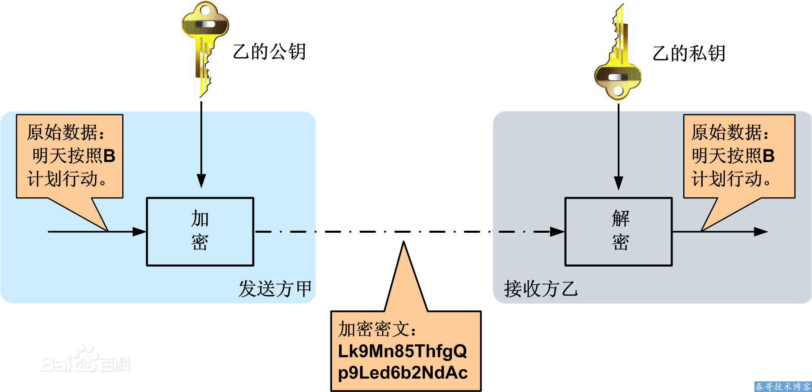
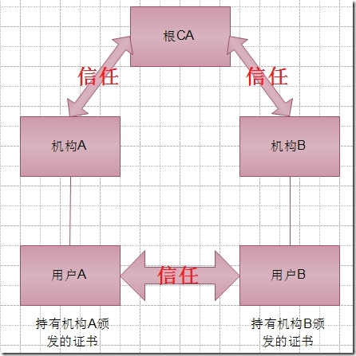
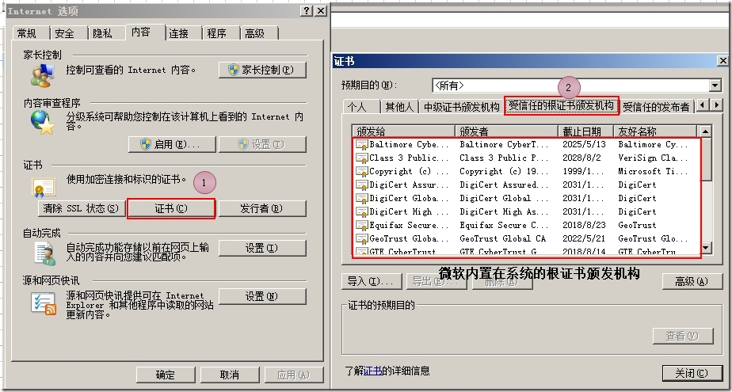
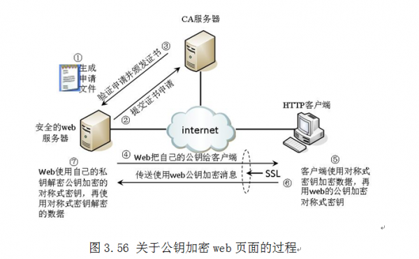

openssl加密DSA,RSA介绍
| 版本 | 日期 | 状态 | 修订人 | 摘要 |
|---|---|---|---|---|
| V1.0 | 2016-03-28 | 创建 | 开源方案 | 初始版本 |
| V1.1 | 2017-04-28 | 修订 | 开源方案 | 增加数字证书签发过程说明 |
| V1.2 | 2018-03-08 | 修订 | 开源方案 | 增加ssl证书访问过程说明 |
在日常系统管理工作中，需要作一些加解密的工作，通过openssl工具包就能完成我们很多需求！
openssl RSA 加解密
RSA是基于数论中大素数的乘积难分解理论上的非对称加密法,使用公私钥的方法进行加解密
公钥 用于加密，它是向所有人公开的 ; 私钥用于解密，只有密文的接收者持有
 如图所示，甲乙之间使用非对称加密的方式完成了重要信息的安全传输。
- 乙方生成一对密钥（公钥和私钥）并将公钥向其它方公开。
- 得到公钥的甲方使用该密钥对机密信息进行加密后再发送给乙方。
- 乙方再用自己保存的另一把专用密钥（私钥）对加密后的信息进行解密。乙方只能用其专用密钥（私钥）解密由对应的公钥加密后的信息。
- 在传输过程中，即使攻击者截获了传输的密文，并得到了乙的公钥，也无法破解密文，因为只有乙的私钥才能解密密文
- 同样，如果乙要回复加密信息给甲，那么需要甲先公布甲的公钥给乙用于加密，甲自己保存甲的私钥用于解密。
生成一个私钥
[root@hunterfu ~]# openssl genrsa -out private.key 1024注意: 需要注意的是这个文件包含了公钥和密钥两部分，也就是说这个文件即可用来加密也可以用来解密,后面的1024是生成密钥的长度.
通过密钥文件private.key 提取公钥
[root@hunterfu ~]# openssl rsa -in private.key -pubout -out pub.key使用公钥加密信息
[root@hunterfu ~]# echo -n "123456" | openssl rsautl -encrypt -inkey pub.key -pubin >encode.result使用私钥解密信息
[root@hunterfu ~]#cat encode.result | openssl rsautl -decrypt -inkey private.key 123456
至此，一次RSA加密解密的过程已经完成！
openssl DSA签名与验证
和RSA加密解密过程相反，在DSA数字签名和认证中，发送者使用自己的私钥对文件或消息进行签名，接受者收到消息后使用发送者的公钥来验证签名的真实性
DSA只是一种算法，和RSA不同之处在于它不能用作加密和解密，也不能进行密钥交换，只用于签名,它比RSA要快很多.
生成一个密钥(私钥)
[root@hunterfu ~]# openssl dsaparam -out dsaparam.pem 1024 [root@hunterfu ~]# openssl gendsa -out privkey.pem dsaparam.pem生成公钥
[root@hunterfu ~]# openssl dsa -in privkey.pem -out pubkey.pem -pubout [root@hunterfu ~]# rm -fr dsaparam.pem使用私钥签名
[root@hunterfu ~]# echo -n "123456" | openssl dgst -dss1 -sign privkey.pem > sign.result使用公钥验证
[root@hunterfu ~]# echo -n "123456" | openssl dgst -dss1 -verify pubkey.pem -signature sign.result Verified OK
至此，一次DSA签名与验证过程完成！
数字证书CA
公钥在网络传输过程中，无法保证可信度，容易被窃取或者伪装，所以我们就需要一个受信任的第三方机构CA来保证公钥信息的安全分发。  有了根CA之后，证书颁发机构信任根CA，不同证书颁发机构只要信任根CA那么颁发的证书都是受信任的。
 浏览器默认已经内置第三方的受信任的根证书的颁发机构
证书签发过程

服务方S向第三方机构CA提交公钥、组织信息、个人信息(域名)等信息并申请认证;
CA通过线上、线下等多种手段验证申请者提供信息的真实性，如组织是否存在、企业是否合法，是否拥有域名的所有权等;
如信息审核通过，CA会向申请者签发认证文件-证书。 证书包含以下信息：申请者公钥、申请者的组织信息和个人信息、签发机构 CA的信息、有效时间、证书序列号等信息的明文，同时包含一个签名; 签名的产生算法：首先，使用散列函数计算公开的明文信息的信息摘要，然后，采用 CA的私钥对信息摘要进行加密，密文即签名;
客户端 C 向服务器 S 发出请求时，S 返回证书文件;
客户端 C读取证书中的相关的明文信息，采用相同的散列函数计算得到信息摘要，然后，利用对应 CA的公钥解密签名数据，对比证书的信息摘要，如果一致，则可以确认证书的合法性，即公钥合法;
客户端然后验证证书相关的域名信息、有效时间等信息;
客户端会内置信任CA的证书信息(包含公钥)，如果CA不被信任，则找不到对应 CA的证书，证书也会被判定非法。
PKI架构使用证书保护Web访问的安全实现SSL的基本原理

web服务器生成一个证书申请文件，该申请文件中存放有Web站点相关身份的一些唯一性标识，如果Web服务器上已经存在了公钥，那么Web服务器会将自己的公钥存放到证书申请文件中，以备证书服务器认证Web公钥的合法性。
Web服务器将生成的证书申请文件提交给证书服务器，待证书服务器审查。
当证书服务器验证Web服务器申请文件后，证书服务器会为Web服务器颁发证书，证书中包括了Web服务器将要使用的公钥副本，并将公钥副本与Web服务器的身份相绑定。如果在第一步的申请文件中已经存在Web服务器的公钥，那么证书服务器就对Web的公钥进行合法性签字，注意Web服务器自己本地产生公钥，只由证书服务器来授权它公钥的合法性，这是完全有可能的。
Web将自己的公钥传送给客户端，以便客户端可以使用Web的公钥来加密相关消息，公钥潜在是可以公开的，所以Web服务器这样做，并没有造成任何安全隐患。
客户端将使用会话密钥（就是对称式密钥）来加密页面的内容，然后使用Web的公钥来加密会话密钥，因为会话密钥加密数据的速度快，并非对称式加密更安全。
客户端把使用Web服务公钥加密的消息通过网络传送给Web服务器，如果传送的数据被网络中的恶棍截取，也无法读取数据，因为他没有Web服务器的私钥。私钥存储在Web服务器上，它是不可公开的，其它人无法获取。
当Web服务器收到客户端使用自己公钥加密的消息后，它使用这把公钥对应的私钥解密消息，然后再解密会话密钥加密的内容，得到原始明文消息。
生成自己的CA (Certificate Authority)
生成CA的key
openssl genrsa -des3 -out ca.key 4096生成CA的证书
openssl req -new -x509 -days 365 -key ca.key -out ca.crt生成我们的key和CSR
openssl genrsa -des3 -out myserver.key 4096 openssl req -new -key myserver.key -out myserver.csr使用ca的证书和key，生成我们的证书
openssl x509 -req -days 365 -in myserver.csr -CA ca.crt -CAkey ca.key -set_serial 01 -out myserver.crt注意: 这里的set_serial指明了证书的序号，如果证书过期了(365天后)， 或者证书key泄漏了，需要重新发证的时候，就要加1
查看证书
查看KEY信息
openssl rsa -noout -text -in myserver.key查看CSR信息
openssl req -noout -text -in myserver.csr查看证书信息
openssl x509 -noout -text -in ca.crt验证签发的证书
openssl verify -CAfile ca.crt myserver.crt
openssl使用注意事项
注意: 由于信息经过加密或者签名后，都变成不可读模式,为了方便终端查看和传输使用(url提交数据,需要作urlencode操作)，可以使用base64进>行编码
- openssl enc -base64 -A ：将加密后的信息使用base64编码
- openssl enc -d -base64 -A ： 将信息使用base64反编码
- openssl enc -base64 -A ：将加密后的信息使用base64编码
java中此私钥需要转换下格式才能使用:
[root@hunterfu ~]# openssl pkcs8 -topk8 -nocrypt -in private.key -outform PEM -out java_private.key